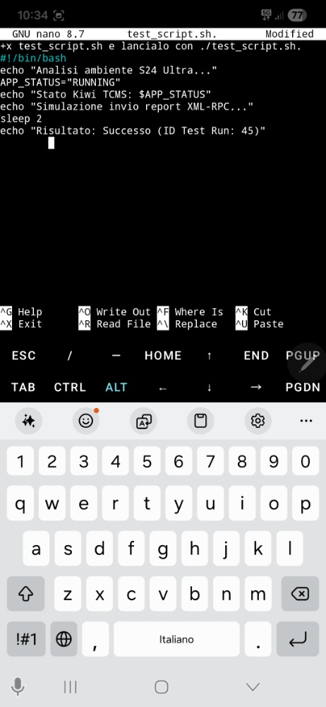

Kiwi TCMS Automation Workflow
A comprehensive testing stack: from Mobile Prototyping to Professional Containerized Environments
End-to-End Development Flow
PHASE 1: PROTOTYPING

Mobile Bash Logic
Initial development of the automation logic using Termux on a Samsung S24 Ultra. Validated script portability and cross-platform compatibility in a mobile-first environment.
PHASE 2: EXECUTION
Automated Test Validation
Script execution and output verification. Simulated test reporting and result handling, confirming Test Run ID: 45 within the terminal environment.

PHASE 3: DEPLOYMENT

Docker Infrastructure
Full migration to Docker Compose. Orchestrated Kiwi TCMS and PostgreSQL containers to ensure data persistence and environment scalability.
$ docker-compose up -d
[OK] Container kiwi-db Running
[OK] Container kiwi-web Running
[OK] Container kiwi-db Running
[OK] Container kiwi-web Running